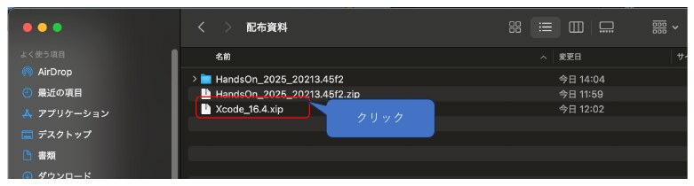
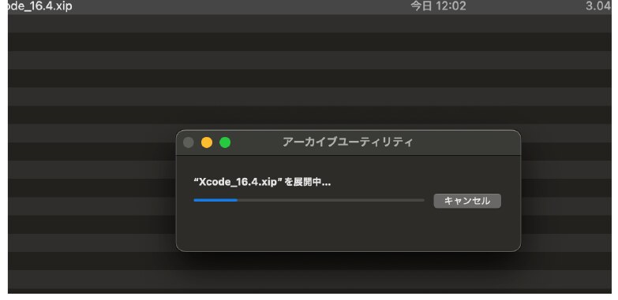
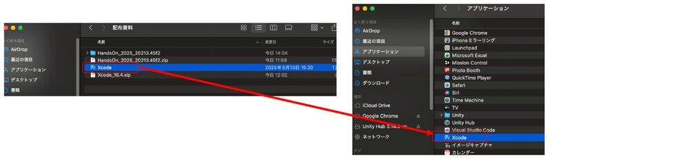
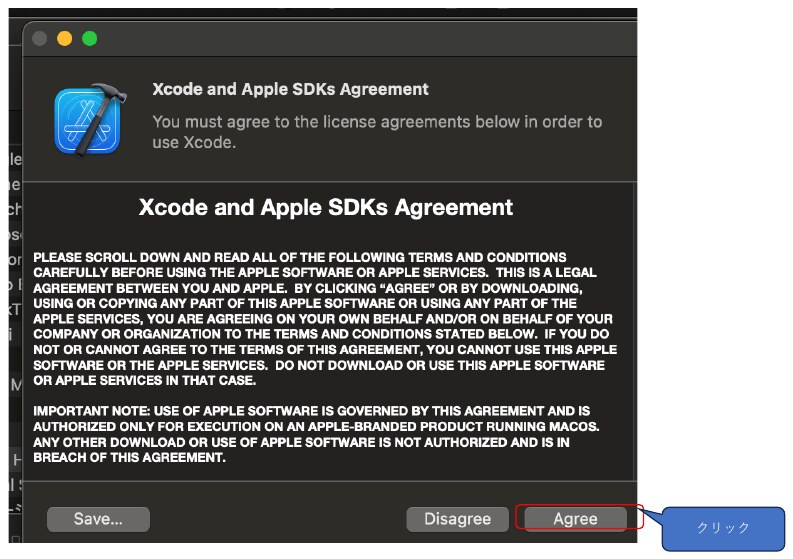
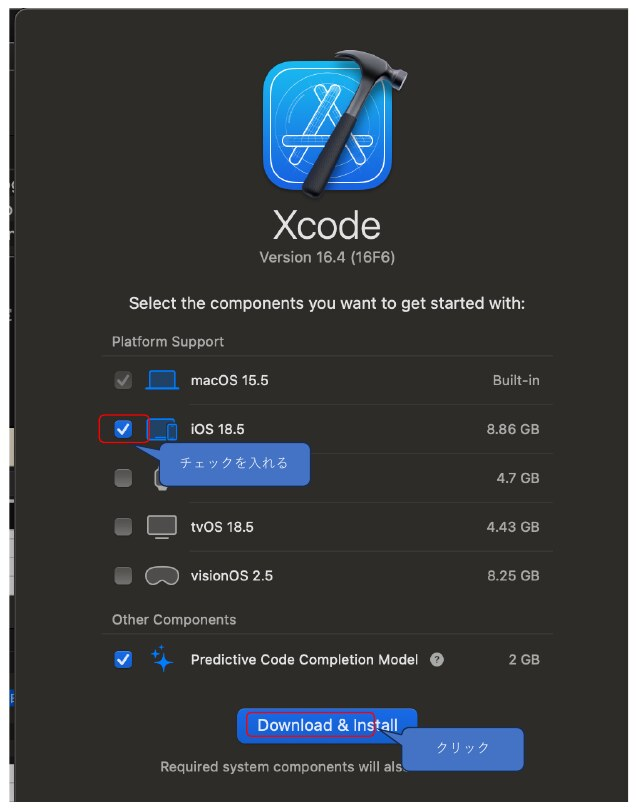
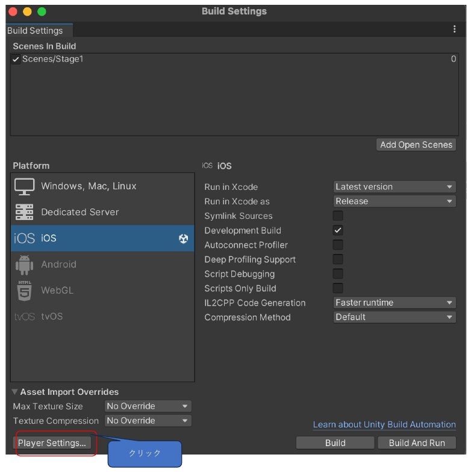
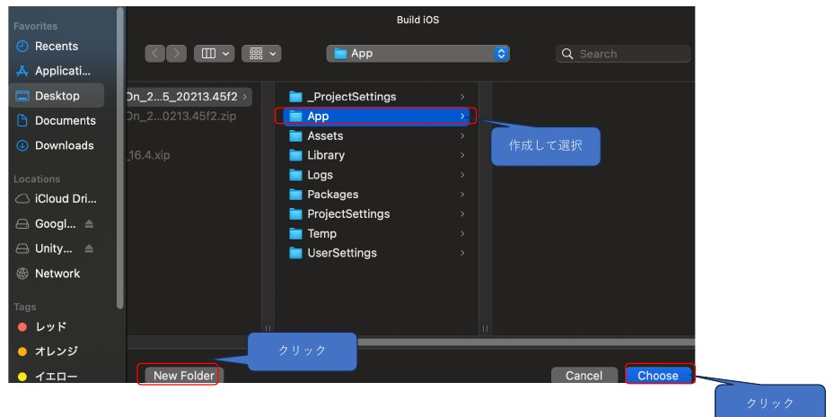
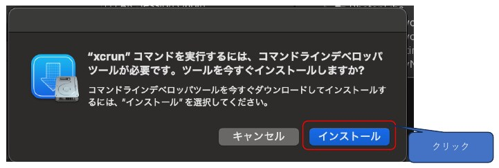

今日の内容
本日のアジェンダ
前回の課題（キューブを落とした画面）の確認
AR はどうやって現実の空間を認識しているか
AR テンプレートの中身 ― AR Foundation のシーン構成
平面の見た目を変えてみる（今日の課題）
スマホ実機で動かす （iPhone ／ Android）― 環境づくりからビルドまで。手順書 PDF を2つ配ります今日の課題
後半は自分のスマホで AR を動かすところまで やります。スマホと USB ケーブル を出しておいてください（ケーブルが無い人は家で。Xcode などのダウンロードは時間がかかるので、先に始めてから他の作業をする のがコツです）。
ARの仕組み
カメラで目印を見つけて、面をさがしている
スマホ
検出された面
特徴点（床の模様・机の角）
動かすほど分かる
スマホを動かさないと何も分かりません。 AR を始めたら、明るい場所で床や机をゆっくり映す 。これが最初の作法です。
3つのキーワード
カメラ → 平面検出 → トラッキング
📷
カメラ＋センサー
映像と動きから、空間の目印（特徴点）を集める
→
▭
平面検出
床・机・壁を「面」として認識。テンプレートでは半透明の板で表示
→
📍
トラッキング
スマホを動かしても、置いたモノが同じ場所にとどまる
実機で試すときのコツ ：明るい場所で、模様のある床や机を、ゆっくり映す。真っ白な机・暗い部屋・ガラスや鏡は苦手（目印が見つからない）。このあと実機で「面が出ない！」となったら、まずこれを思い出してください。
AR Foundation とは
作るのは1つ。動かす先で中身が差し替わる
自分のプロジェクト
ARScene・スクリプト（ここは1つだけ作る）
AR Foundation（差し替え口）
ARKit
Apple の AR
📱 iPhone 実機
ARCore
Google の AR
🤖 Android 実機
XR Simulation
仮想の部屋
💻 Mac で Play
切り替えの設定：Edit → Project Settings → XR Plug-in Management（テンプレートは設定済み・触らなくてOK）
後半で Platform を iOS ／ Android に切り替えますが、Play ボタンでは引き続き仮想の部屋が動きます 。
XR Origin についているもの
面を見つけたら、Plane Prefab を置く
AR Plane Manager
面を見つける担当
Plane Prefab
＝ ARPlaneVisualizer
画面に出る面
床・机・壁の上に
Plane Prefab の見た目を変えれば、出てくる面の見た目が変わる
＝ これが今日やること
XR Origin にはほかに AR Raycast Manager（第3回で使う）と Cube Game Controller（キューブを出す）も付いています。
おさらい
仮想の部屋の歩き方（Play 中の操作）
キー・マウス 動作 実機ではこれ W / A / S / D 前後左右に移動 歩く Q / E 下降 / 上昇 しゃがむ・背伸び ← → ↑ ↓ 視点を回す スマホの向きを変える 左 Shift ＋ 移動キー 3倍速で移動 ― キューブを短くクリック キューブが落ちる（着地で音） タップ
まず ARテンプレートを開いて Play → 床の方を向いて歩き回り、半透明の白い面 が出ることを確認。この面の色を、これから変えます。
Plane Prefab
ARPlaneVisualizer の中身
Assets/Prefabs/ARPlaneVisualizer についているもの
Mesh Filter ：面の形（検出結果に合わせて自動で作られる）Mesh Renderer ：面の見た目 。Materials に ARPlane マテリアルが入っているMesh Collider ：キューブが面の上に乗れるようにするAR Plane ／ AR Plane Mesh Visualizer ：AR Foundation の部品（触らない）
マテリアル＝色・透明度・質感のデータ
Assets/Materials/ARPlane：白・半透明（A = 89、35% くらい）
春学期にキューブの色を変えたのと同じ仕組み
今日は ARPlane を複製して色を変え、Prefab に割り当てる
元の ARPlane は残しておく（戻したくなったとき用）
変えるのは Mesh Renderer の Material だけ 。ほかのコンポーネントは触らなくて OK です。
任意
別の部屋で試す（XR Environment）
1
Window → XR → AR Foundation → XR Environment Scene ビューが「XR Environment」表示に切り替わり、上にドロップダウンが出る
2
環境を選ぶ 初期設定は Bedroom（寝室）。Backyard（庭）・Kitchen・LivingRoom・Office・Park（公園）・Museum などから選ぶ
3
Play して確認 屋外（Park・Backyard）は面が広くて見つけやすい。机や棚の上にも面が出るか試してみよう → スクリーンショット1枚（任意課題）
総合制作で「自分の部屋の机に置く」なら Bedroom や Office、「教室の床に置く」なら広い環境で試しておくと、実機で置いたときの大きさの感覚がつかめます。
全体像
今日やること ― 「自分のスマホで AR を動かす」まで
🧰
① 環境をつくる
Unity のモジュール、Bundle Identifier、iPhone は Xcode
→
🔌
② つないで認識させる
ケーブルでつないで「信頼」／「許可」
→
📱
③ ビルドして動かす
アプリをスマホに入れて、机の上に AR を出す
順番のコツ ：Unity のモジュールや Xcode のダウンロードは 10〜30 分 かかります。始めたら待たずに スマホ側の設定へ進んでください。今日中に③まで終わらなくて OK 。ケーブルを忘れた人・家でやりたい人は、手順書 PDF の通りに進めれば同じことができます。
配布資料
手順書 PDF を2つ配ります
🤖 ① Android端末へのUnityアプリ導入 ＆ 画面ミラーリング手順（Mac）
Android Build Support の追加、USB デバッグ、Build And Run
うまくいかないときの一覧
おまけ：APK を手動で入れる方法、スマホの画面を Mac に映す 方法（scrcpy）
📱 ② Xcode環境構築 ＆ UnityからiPhoneへのビルド手順
配布の Xcode（.xip）のインストール ― 画面写真つき
Unity から iOS ビルド → Xcode で署名 → 実機にインストール
うまくいかないときの一覧
授業ページ 第2回 の「配布資料・ダウンロード 」から入手できます。同じ場所に iPhone の人が使う Xcode（.xip）のダウンロードリンク も置いてあります。今日はこの手順書を最初から最後まで使います 。このあとのスライドは要点だけなので、手元で手順書を開きながら 進めてください。
共通
Unity のモジュールを追加する（iPhone・Android 共通）
1
Unity Hub → インストール 左のメニューから「インストール」→ 2022.3.62f3 の右上の ⚙ → 「モジュールを加える」
2
自分のスマホに合わせてチェック iPhone の人：iOS Build Support ／ Android の人：Android Build Support を開いて OpenJDK・Android SDK & NDK Tools にもチェック。容量は iOS 2.8GB／Android 一式 7.5GB（空き 15GB 目安）
3
インストール（10〜30分）→ 終わったら Unity を開き直す Android は「続行する」→ Google のライセンスに同意 →「インストール」。終わったら Unity をいったん閉じて開き直す（開き直さないと次のタブが出ません）。失敗するときは Unity Hub を最新版に更新 してやり直す
4
File → Build Settings → 自分のスマホを選んで Switch Platform 「No … module loaded」と出なければ OK。Switch Platform を押す（数分。Play の仮想の部屋はそのまま動きます）。Android で Rosetta を求められたら「インストール」
第1回では iPhone の人に Xcode だけ案内しましたが、Unity 側にも iOS Build Support が必要 です。ケーブル は iPhone 15 以降・Android が USB-C – USB-C 、iPhone 14 以前が USB-C – Lightning （充電専用は NG）。
共通
Player Settings を自分用にする（Bundle Identifier）
1
Edit → Project Settings → Player → 自分のスマホのタブ（iOS ／ Android） 下の Other Settings を開き、Identification の欄を見る。iOS ／ Android のタブが無い人 は前のスライドのモジュール追加と Unity の開き直しがまだ
2
Bundle Identifier（Android では Package Name）を自分だけの名前にする com.example.game1ar → 例：com.fushidamasahiro.arsound（com.名字＋名前（ローマ字・英小文字）.arsound 。同じ名字の人とぶつからないよう名前まで入れる。使えるのは英小文字・数字・ピリオドだけ）
3
iPhone の人はあと2つ：Target minimum iOS Version を 15.0 以上に ／ Automatically Sign にチェック どちらも同じ Other Settings の中（Configuration ／ Identification）。12.0 のままだと今の Xcode でビルドできない。Signing Team ID は空のままで OK（あとで Xcode で選びます）
4
File → Save Project で保存 設定はプロジェクトに保存される。この先ずっとこの名前を使う（変えない）
なぜ変える？ Bundle Identifier は「世界で1つだけのアプリの名前」。全員が com.example.game1ar のままだと、最初の1人しか iPhone に入れられません （Failed to register bundle identifier）。
iPhone ① Xcode を入れる
配布の .xip から Xcode をインストールする
自分の macOS（りんごマーク → このMacについて） 使うファイル 大きさ macOS 15.3 以降 Xcode_16.4.xip 約 3.0GB macOS 26.5 以降 Xcode_26.5_Apple_silicon.xip 約 2.3GB

1 配った .xip をダブルクリック

2 展開を待つ（数分〜十数分 ）

3 アプリケーション へドラッグ
授業で配ります。受け取れなかった人は授業ページの「配布資料・ダウンロード」から。空き容量 25GB 以上。
iPhone ② Xcode の初回起動
iOS にチェックを入れて Download & Install

1 使用許諾 → Agree

2 iOS にチェック → Download & Install
iOS のチェックを忘れると実機に入れられません 。忘れた人は Xcode → Settings… → Components から後で追加できます。
iPhone ③ Apple Account
Xcode に自分の Apple Account を登録する
Xcode → Settings…（Cmd + ,） → Accounts タブ → 左下の「+ 」→ Apple Account でサインイン。
「（自分の名前）(Personal Team) 」と出れば OK。iPhone で使っている Apple ID でサインインしてください（2ファクタ認証のコードが iPhone に届きます）。有料の Developer Program は不要 です。
無料の Personal Team の制限：入れた自作アプリは 7日で期限切れ （Xcode から入れ直せば OK）。同時に入れられるのは 3つまで 。
iPhone ④ iPhone をつなぐ
つないで「信頼」→ デベロッパモードを ON
1
ケーブルで Mac につなぐ（iOS は当分アップデートしない） Xcode は自分より新しい iOS の iPhone を扱えません。しばらく iPhone の iOS を上げないでください （設定 → 一般 → ソフトウェアアップデート → 自動アップデートを OFF）。ケーブルは充電専用 NG。ロックは解除しておく
2
「このコンピュータを信頼しますか？」→ 信頼 → パスコード Mac 側に「この USB アクセサリをこの Mac に接続しますか？」が先に出るので「許可 」（押さないと「信頼」が出ません）
3
Xcode → Window → Devices and Simulators 左の一覧に iPhone が出る（これで iPhone 側に「デベロッパモード」の項目が現れる）。「Pair」が出たら押す。黄色い ⚠ はまだ出ていて OK → 手順 4 へ
4
iPhone：設定 → プライバシーとセキュリティ → デベロッパモード → ON 一番下の「セキュリティ」欄。ON → 再起動 → 再起動後にもう一度「オンにする」→ パスコード（未設定の人は先に設定）→ ロックを解除してつないだまま待つ （初回は数分〜10分）→ ⚠ が消えれば完了
「デベロッパモード」が出ないときは、手順 3 を先に（一度 Xcode につながないと項目が現れません）。iOS をアップデートしたら、つなぎ直してペアリングをやり直します。
iPhone ⑤ ビルド
Unity から書き出す

1 File → Build Settings → iOS →「Build 」（Build And Run ではない）

2 New Folder で App を作って Choose（次回も同じ場所 → Replace）

3 初回だけ出る → インストール → 同意する → もう一度 Build
ビルドには数分〜十数分かかります。終わったら次のスライドへ。
iPhone ⑦ 署名して実行
Xcode で署名して、iPhone に入れる
1
左の一覧の一番上「Unity-iPhone」（青いアイコン）をクリック 中央の TARGETS で Unity-iPhone を選び、上の「Signing & Capabilities 」タブを開く
2
Automatically manage signing にチェック → Team を選ぶ 「自分の名前 (Personal Team) 」を選択。赤いエラーが消えれば OK（消えないときは次のスライド）
3
上の実行先（Any iOS Device など）をクリックして、自分の iPhone を選ぶ つないだ iPhone が一覧に出ます。「デバイスの準備中」と出たら数分待つ
4
左上の ▶（Cmd + R）→ iPhone にアプリが入る iPhone で「信頼されていないデベロッパ 」と出たら 設定 → 一般 → VPNとデバイス管理 → 自分の Apple ID → 「信頼」→ もう一度 ▶
起動したらカメラの許可を「許可 」。本体横のサイレントスイッチをオフ（マナーモード解除） にしないと音が鳴りません。
Android ① スマホ側
開発者向けオプションを出して、USB デバッグを ON
1
設定 → デバイス情報 → 「ビルド番号」を7回連続タップ 「開発者向けオプションが有効になりました」（機種によって「これでデベロッパーになりました！」など）と出れば OK。途中でパスコードを聞かれる
2
設定 → システム → 開発者向けオプション → 「USB デバッグ」を ON 確認ダイアログが出たら OK。Galaxy は先に 設定 → セキュリティおよびプライバシー → 自動ブロッカーを OFF （ON のままだと USB デバッグが押せない）。Xiaomi は「USB 経由でインストール」「USB デバッグ（セキュリティ設定）」も ON
メーカー 「ビルド番号」の場所 → 「開発者向けオプション」の場所（機種・OS のバージョンで多少違います） Pixel 設定 → デバイス情報 → ビルド番号 → 設定 → システム → 開発者向けオプション Galaxy 設定 → 端末情報 → ソフトウェア情報 → ビルド番号 → 設定の一番下 に「開発者向けオプション」 Xperia ／ AQUOS 設定 → デバイス情報 → ビルド番号 → 設定 → システム →（詳細設定 →）開発者向けオプション Xiaomi ／ POCO 設定 → デバイス情報 → OS バージョン （MIUI バージョン）を7回 → 設定 → 追加設定 → 開発者向けオプション OPPO 設定 → デバイスについて → バージョン → ビルド番号（バージョン番号）を7回 → 設定 → その他の設定 → 開発者向けオプション
見つからないときは、設定アプリの検索欄に「開発者」と入力すると出てきます。
今日の課題
スマホで動いている画面のスクショ 1枚
自分のスマホに AR アプリを入れて、机や床に面が出ている画面 （またはキューブが見えている画面）を1枚撮って提出してください。それだけです。
締切：第3回 授業開始時 止まったところの画面を1枚 で OK。スマホを使わない人はその旨をひとこと。評価は変わりません。
今日のまとめ
第2回のまとめ
AR はカメラ＋センサー で目印（特徴点）を追いかけ、平面検出 とトラッキング をしている
AR Foundation ：1つのプロジェクトで ARKit（iPhone）／ARCore（Android）／XR Simulation（Mac）を差し替えるPlane Prefab（ARPlaneVisualizer）のマテリアル を変えると、検出した面の見た目が変わる
実機：モジュール追加 → Bundle Identifier → つないで「信頼」／「許可」→ ビルドして自分のスマホで AR が動いた
手順とつまずきポイントは配布の手順書 PDF 2つ 。この先も同じ手順で入れ直せます
次回（第3回）： タップして置く・AR レイキャスト。Cube Prefab を差し替えて、置くモノを自分のオブジェクト（MyObject）にします。